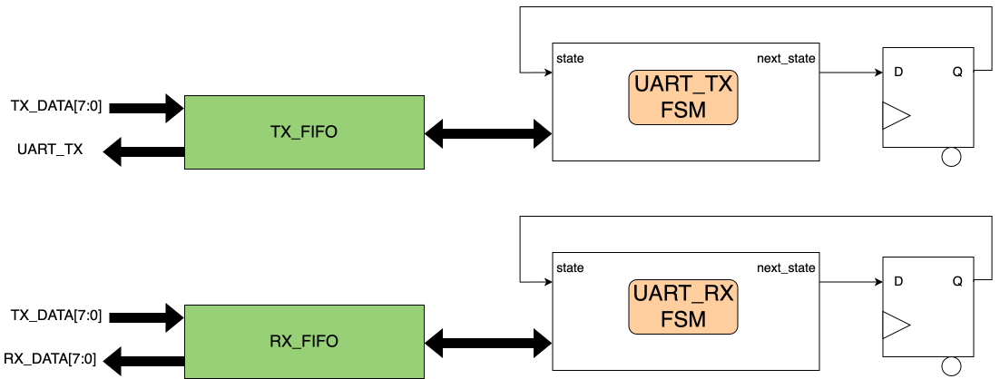
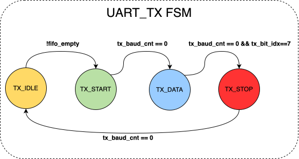
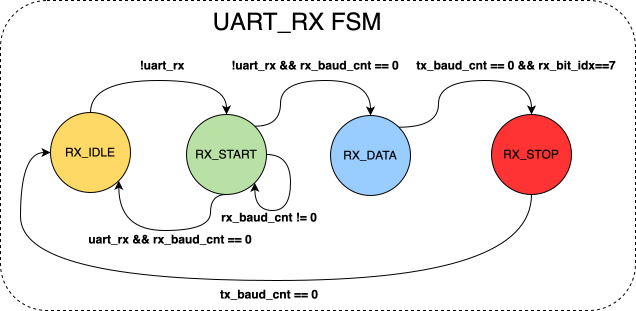
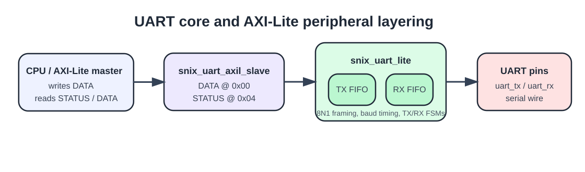
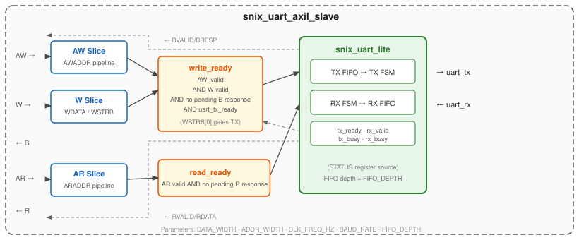

Universal Asynchronous Receiver-Transmitters are among the simplest and most useful digital interfaces in embedded systems. Despite the availability of much faster links such as USB, Ethernet, PCIe, and HDMI, UART remains one of the most common ways to bring up a board, print debug messages, interact with bootloaders, and control peripherals from a host computer. Its appeal is simple: it requires very little logic, very few pins, and almost no protocol overhead.
This post follows the earlier Writing a CSR Block Using AXI-Lite article in the same series. There, the focus was a generic control-and-status register block. Here, the same AXI-Lite ideas are applied to a concrete serial peripheral: a UART core and the small wrapper that turns it into a two-register device.
This post covers two layers of the same design in verilaxi. The first is snix_uart_lite, a compact UART core with clean byte-stream interfaces. The second is snix_uart_axil_slave, which wraps that core behind two AXI-Lite registers so that any AXI-Lite master — a CPU, a hardware DMA engine, or the UART bus master described in the next debug-console article — can send and receive bytes without knowing anything about serial bit timing.
Why UART still matters
UART is still everywhere because it solves a practical problem very well. Most FPGA boards expose a USB-to-UART bridge, which means that a host computer can talk to the FPGA using nothing more than a serial terminal or a short script. This makes UART ideal for early board bring-up, debug logging, simple command interfaces, boot and recovery paths, and CPU-less control of peripherals.
Compared with other interfaces, UART is not fast, but it is extremely accessible. USB is standardized and high-throughput, but much more complex to implement. SPI is simple and efficient, but it requires a clock and a dedicated master-slave relationship. I2C uses only two wires and supports multiple devices, but it is slower and more protocol-heavy. Ethernet offers orders of magnitude more throughput and networking capability, but requires substantially more logic and system integration. UART is not a high-throughput data plane. It is a low-complexity control and visibility link, and that is exactly why it remains so useful.
UART framing
The core in this article uses the common 8N1 format:
- 1 start bit
- 8 data bits
- no parity bit
- 1 stop bit
The line is idle-high. A transfer begins when the transmitter drives the line low for one bit period, indicating the start bit. The receiver then samples the incoming bits at the baud interval and reconstructs the byte. A frame therefore contains 10 transmitted bits for every 8-bit payload byte.
Figure (1): UART 8N1 frame on the wire. uart_tx carries 0x55 (01010101) and uart_rx carries 0xAA (10101010). Data bits are shifted out LSB-first, so D0 is the least significant bit.
| Baud rate | Frame format | Bits per payload byte | Approximate payload throughput |
|---|---|---|---|
115200 | 8N1 | 10 | 11520 bytes/s |
1000000 | 8N1 | 10 | 100000 bytes/s |
Table (1): Effective UART payload throughput for common baud rates in 8N1 format.
Baud rate and bit timing
UART timing is derived from the system clock. If the FPGA clock is CLK_FREQ_HZ and the desired UART baud rate is BAUD_RATE, then the number of clock cycles per transmitted bit is:
CLKS_PER_BIT = CLK_FREQ_HZ / BAUD_RATE
In snix_uart_lite.sv, this becomes:
localparam int CLKS_PER_BIT = CLK_FREQ_HZ / BAUD_RATE;
localparam int HALF_BIT_CLKS = (CLKS_PER_BIT > 1) ? (CLKS_PER_BIT / 2) : 1;
CLKS_PER_BIT is used by the transmitter to hold each output bit for the correct duration. HALF_BIT_CLKS is used by the receiver to sample the first data bit in the middle of the bit period after detecting the start edge. For a 100 MHz FPGA clock and a baud rate of 115200, the divider is approximately 868, so each UART bit lasts for about 868 clock cycles.
Core architecture
The UART core is intentionally small. It has one transmitter FSM, one receiver FSM, one shallow TX byte FIFO, one shallow RX byte FIFO, and ready/valid byte interfaces on both sides. This makes the UART easy to compose with control-plane logic, since surrounding modules do not need to work at the bit level. They only send and receive bytes.
input logic [7:0] tx_data,
input logic tx_valid,
output logic tx_ready,
output logic [7:0] rx_data,
output logic rx_valid,
input logic rx_ready{kind=link}

Figure (2): snix_uart_lite architecture with byte-facing TX/RX interfaces, local FIFOs, and separate TX/RX bit-timing state machines.
Why the FIFOs are there
Even a simple UART benefits from buffering. The transmitter sends one serial bit at a time, so a single byte takes many system clock cycles to leave the FPGA. Without buffering, upstream control logic would need to wait until the transmitter is idle before presenting every byte. A small TX FIFO decouples the producer from the serial line and allows a short burst of bytes to be queued quickly.
The receiver has the opposite problem. It reconstructs bytes as they arrive from the serial line. Without buffering, downstream logic would have to consume each received byte immediately. A small RX FIFO allows the UART to absorb incoming bytes even if the consumer stalls briefly.
The default FIFO depth is 8 bytes: deep enough to absorb short bursts, but still very easy to understand and verify. The UART stays self-contained rather than instantiating a general reusable FIFO primitive, which keeps the module boundary clean.
The TX state machine
The transmitter FSM has four states: TX_IDLE, TX_START, TX_DATA, and TX_STOP. When idle, the line is high. If the TX FIFO is not empty, the core dequeues one byte, drives the start bit low, and begins the transmission.
typedef enum logic [1:0] {
TX_IDLE,
TX_START,
TX_DATA,
TX_STOP
} tx_state_t;- in
TX_IDLE, wait for a byte in the TX FIFO - in
TX_START, hold the start bit low for one bit interval - in
TX_DATA, shift out the 8 data bits LSB-first - in
TX_STOP, hold the line high for one stop bit interval
if (!tx_fifo_empty) begin
tx_fifo_rd_en <= 1'b1;
tx_shift_reg <= tx_fifo_data;
tx_baud_cnt <= CLKS_PER_BIT - 1;
tx_bit_idx <= '0;
tx_busy <= 1'b1;
tx_state <= TX_START;
uart_tx <= 1'b0;
end{kind=link}

Figure (3): UART transmit state machine. The transmitter idles high, emits a start bit, shifts out eight data bits LSB-first, then drives the stop bit before returning to idle.
The RX state machine
The receiver FSM also has four states: RX_IDLE, RX_START, RX_DATA, and RX_STOP. In the idle state, the receiver waits for the line to go low. That falling edge indicates the beginning of a start bit. Instead of sampling immediately, the receiver waits for half a bit period so that it samples near the center of the start bit. This improves robustness against edge timing uncertainty.
typedef enum logic [1:0] {
RX_IDLE,
RX_START,
RX_DATA,
RX_STOP
} rx_state_t;- in
RX_IDLE, watch foruart_rx == 0 - in
RX_START, waitHALF_BIT_CLKSand confirm the start bit is still low - in
RX_DATA, sample one data bit everyCLKS_PER_BIT - in
RX_STOP, sample the stop bit and push the byte into the RX FIFO
{kind=link}

Figure (4): UART receive state machine. After detecting the falling edge of the start bit, the receiver waits half a bit period, samples each data bit at the baud interval, then validates the stop bit before pushing the byte into the RX FIFO.
UART core verification
The UART core is verified in test_uart_lite.sv. The test exercises loopback behavior by sending a short sequence of bytes and checking that the receiver reconstructs the same values:
[UART][TX ] byte 0 data=0x55
[UART][TX ] byte 1 data=0xa3
[UART][TX ] byte 2 data=0x00
[UART][TX ] byte 3 data=0xff
[UART][RX ] byte 0 data=0x55
[UART][RX ] byte 1 data=0xa3
[UART][RX ] byte 2 data=0x00
[UART][RX ] byte 3 data=0xffmake run TESTNAME=uart_liteFrom serial bytes to a bus peripheral
A standalone UART core with ready/valid byte interfaces is useful, but it is not what a CPU sees. A processor running software expects a memory-mapped register at a fixed address. A DMA engine or AXI-Lite bus master expects standard handshake channels, not a byte-stream handshake. The gap between those two worlds is the job of snix_uart_axil_slave.
The wrapper adds almost no logic. It places three pipeline register slices on the incoming AXI channels, builds a single write_ready expression that fuses address validity, data validity, response-channel availability, and UART back-pressure into one signal, and routes the DATA and STATUS addresses to the UART byte interface. Everything below the register boundary — bit timing, framing, FIFO management — stays exactly as described above. The AXI-Lite master never has to know that UART even exists.
{kind=link}

Figure (5): The merged UART stack. A CPU or any AXI-Lite master sees only two registers in snix_uart_axil_slave, while snix_uart_lite keeps the UART framing, baud timing, and TX/RX state machines local to the serial layer.
Wrapping the byte stream in a register interface
snix_uart_axil_slave exposes the UART core behind two AXI-Lite registers. Any AXI-Lite master — a MicroBlaze, a RISC-V soft-core, a hardware DMA engine, or the UART-to-AXI-Lite master from the companion post — can write a byte to the DATA register at offset 0x00 and read the peripheral status from the STATUS register at offset 0x04. No knowledge of UART bit timing or handshake sequencing is required from the master. Write a word, the UART sends the byte.
This is the standard pattern for integrating low-speed peripherals into processor-based SoCs. The AXI-Lite slave module is the glue layer that turns a byte-oriented device into a register-oriented one.
Register map
| Offset | Name | Access | Bits | Description |
|---|---|---|---|---|
0x00 |
DATA |
Write | [7:0] | Enqueue one byte into the TX FIFO. The write stalls (WREADY de-asserted) if the TX FIFO is full. |
0x00 |
DATA |
Read | [7:0] | Dequeue one byte from the RX FIFO. Software must check STATUS[1] before reading; the value is undefined if the RX FIFO is empty. |
0x04 |
STATUS |
Read-only | [0] tx_ready |
1 when the TX FIFO has room for at least one more byte. |
0x04 |
STATUS |
Read-only | [1] rx_valid |
1 when at least one received byte is waiting in the RX FIFO. |
0x04 |
STATUS |
Read-only | [2] tx_busy |
1 while the UART transmitter is actively shifting bits onto the wire. |
0x04 |
STATUS |
Read-only | [3] rx_busy |
1 while the UART receiver is actively sampling bits from the wire. |
Table (2): snix_uart_axil_slave register map. Bits [31:8] of DATA and [31:4] of STATUS always read as zero.
Slave architecture
{kind=link}

Figure (6): snix_uart_axil_slave architecture. Three register slices pipeline the incoming AXI-Lite AW, W, and AR channels. The write_ready and read_ready expressions gate the handshakes. All UART bit timing and buffering is handled by snix_uart_lite internally.
If you read the earlier Writing a CSR Block Using AXI-Lite post, this wrapper is the same idea in a smaller and more concrete setting: an AXI-Lite slave absorbs bus timing and response rules so the rest of the design can focus on the actual peripheral behavior. Here the peripheral just happens to be a UART. Three instances of snix_register_slice sit on the AW, W, and AR channels so the wrapper stays AXI-Lite compliant while presenting a tiny two-register UART peripheral. The useful architectural takeaway is that software only sees DATA and STATUS; the deeper parser-and-control-plane discussion moves into the next debug-console article.
STATUS register
The STATUS register at offset 0x04 is assembled directly from the UART core signals:
- STATUS[0] tx_ready: when 1, the TX FIFO has at least one free slot. A write to DATA will complete without stalling.
- STATUS[1] rx_valid: when 1, at least one received byte is waiting in the RX FIFO. Software must poll this bit before reading DATA. If DATA is read when
rx_validis 0, the returned value is undefined. - STATUS[2] tx_busy: the transmitter is actively shifting a byte onto the wire. Software that needs to know when the last bit has left the FPGA pin should poll this bit after writing all bytes.
- STATUS[3] rx_busy: the receiver is actively sampling an incoming byte. Rarely polled in normal software but useful in diagnostics.
AXI-Lite write transaction
The WaveDrom diagram below shows one representative AXI-Lite write to the DATA register. The register slices insert a pipeline stage on the incoming channels, so READY is observed after the address and data have been captured rather than in the same cycle as the original VALID assertion.
Figure (7): Representative AXI-Lite write handshake. The slices move the AW and W handshakes behind a registered stage, so READY appears after the request has been captured. The exact number of cycles spent with AWVALID, AWREADY, WREADY, or BVALID high depends on when the master drops VALID and on whether uart_tx_ready is already asserted, but the ordering shown here is the key point: address and data are captured first, then the write response is returned once the byte is accepted.
Slave verification
The testbench for snix_uart_axil_slave uses an accelerated clock configuration: CLK_FREQ_HZ=10_000_000 and BAUD_RATE=1_000_000, giving exactly 10 clock cycles per UART bit. The testbench connects uart_tx directly to uart_rx, forming a loopback path. Every byte written to DATA is transmitted over the simulated serial wire and received back into the RX FIFO.
The test procedure:
- Write byte
0x55to DATA at offset0x00. - Write byte
0xA3to DATA at offset0x00. - Poll STATUS at offset
0x04until bit 1 (rx_valid) is set. - Read DATA twice and compare with
0x55and0xA3. - Read STATUS and verify bit 1 is now 0 (RX FIFO empty).
m.write(32'h0, 32'h00000055); // write byte 0x55 to DATA
m.write(32'h0, 32'h000000A3); // write byte 0xA3 to DATA
// poll STATUS[1] (rx_valid) until set
while (timeout_ctr < 2000) begin
m.read(32'h4, rd_data);
if (rd_data[1]) break;
end
m.read(32'h0, rd_data); // read first byte → expect 0x55
m.read(32'h0, rd_data); // read second byte → expect 0xA3
m.read(32'h4, rd_data); // check STATUS[1] == 0 (FIFO empty)[UART-AXIL][RD ] data=0x55
[UART-AXIL][RD ] data=0xa3
test_uart_axil_slave: PASSmake run TESTNAME=uart_axil_slaveSummary
UART remains one of the most practical interfaces in digital design because it provides a simple bridge between the FPGA and the outside world with minimal logic and no protocol overhead. snix_uart_lite implements that link as a compact 8N1 core: one transmitter FSM, one receiver FSM, small TX and RX byte FIFOs, and a clean ready/valid interface to the surrounding logic.
snix_uart_axil_slave lifts the byte stream into the AXI-Lite register world. Three register slices on the AW, W, and AR channels satisfy the AXI-Lite requirement that READY must not depend combinatorially on VALID. The fused write_ready expression combines address validity, data validity, B-channel availability, and UART TX back-pressure into a single signal that drives both the AXI handshake and the UART enqueue in one step. The result is a peripheral any AXI-Lite master can use without knowing anything about UART timing: write a word to 0x00, the UART sends the byte; poll 0x04 until bit 1 is set, read 0x00, the received byte comes back.
Read next:
A CPU-less AXI-Lite Debug Console: Parser, GPIO, and a Web GUI — how ASCII commands over the same serial cable drive AXI-Lite register reads and writes without any processor inside the FPGA, and how a GPIO peripheral is brought up and validated using this infrastructure.
Implementation pointers in verilaxi: rtl/uart/snix_uart_lite.sv, rtl/uart/snix_uart_axil_slave.sv, tb/tests/uart/test_uart_lite.sv, tb/tests/uart/test_uart_axil_slave.sv.
References:
[1] Jan Axelson. Serial Port Complete. Lakeview Research, 2007.
[2] ARM. AMBA AXI and ACE Protocol Specification. 2011.
[3] Writing a CSR Block Using AXI-Lite - sistenix.com
[4] A CPU-less AXI-Lite Debug Console: Parser, GPIO, and a Web GUI - sistenix.com
Also available in GitHub.